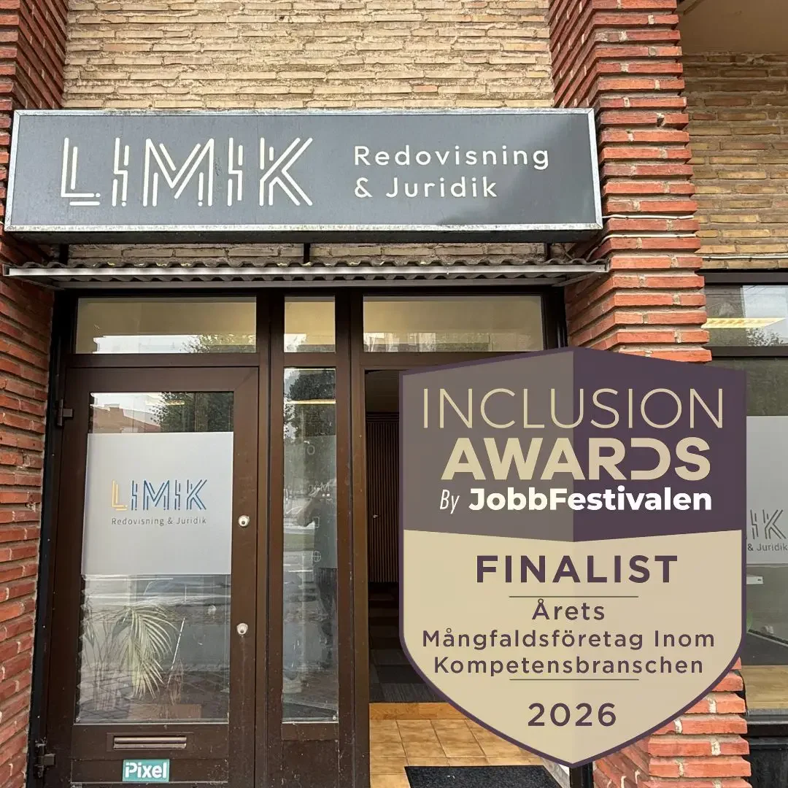

Ekonomi
Mostafa Jamal
Auktoriserad redovisningskonsult
Konsult sedan 2017. Ansvarar för ekonomidelen och kvaliteten i redovisningsuppdraget.
Personlig auktorisation via Srf konsulterna sedan mars 2026.
Kontakta MostafaLimik samlar ekonomi, juridik och affärsrådgivning i Malmö. För dig som vill ha ett personligt samarbete och råd som hänger ihop.
Ett ägarbyte, ett avtal eller en förändring i bolaget rör ofta mer än ett område. Hos Limik finns redovisning och juridik i samma verksamhet, så att arbetet kan samordnas.
I det löpande samarbetet arbetar vi digitalt i Fortnox och håller ihop underlag, avstämningar och rapporter. Du har samma kontaktperson genom uppdraget.
Auktoriserad redovisningskonsult
Konsult sedan 2017. Ansvarar för ekonomidelen och kvaliteten i redovisningsuppdraget.
Affärsjurist
Har arbetat inom juridik sedan 2020. Ansvarar för juridiken och frågor som rör bolag, avtal och ägande.

Limik är finalist i kategorin Årets Mångfaldsföretag inom kompetensbranschen för företag med 1–49 anställda.
Arbetet handlar bland annat om att möta nya företagare på flera språk och göra ekonomi och juridik lättare att förstå.
Läs om nomineringenEtt starkt nätverk runt ditt företag.


Du berättar om nuläget, behoven och det du vill förändra. Vi går igenom vad ett uppdrag skulle kunna omfatta.
Arbetsfördelning, kontaktvägar och omfattning blir tydliga innan vi börjar.
Du får en personlig kontakt och ett samarbete där ekonomi och juridik kan hållas ihop.
Berätta kort om ditt företag och vad du behöver hjälp med.
Första konsultationen för nya företagskunder är kostnadsfri.